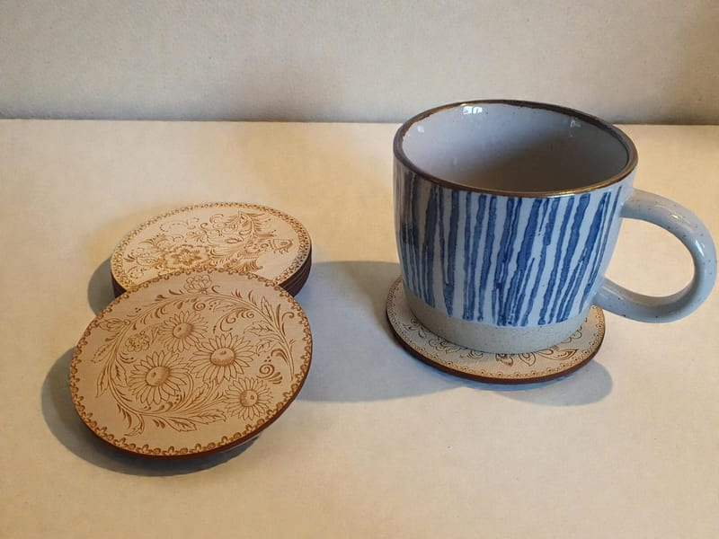
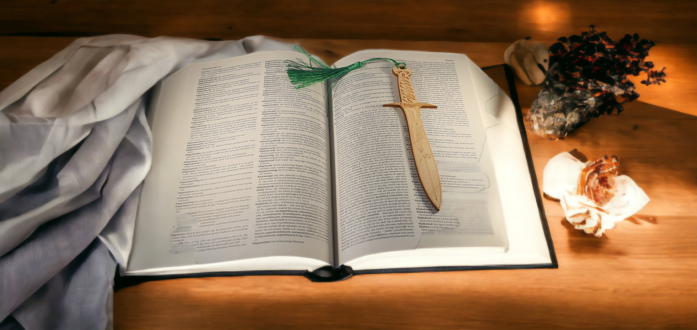
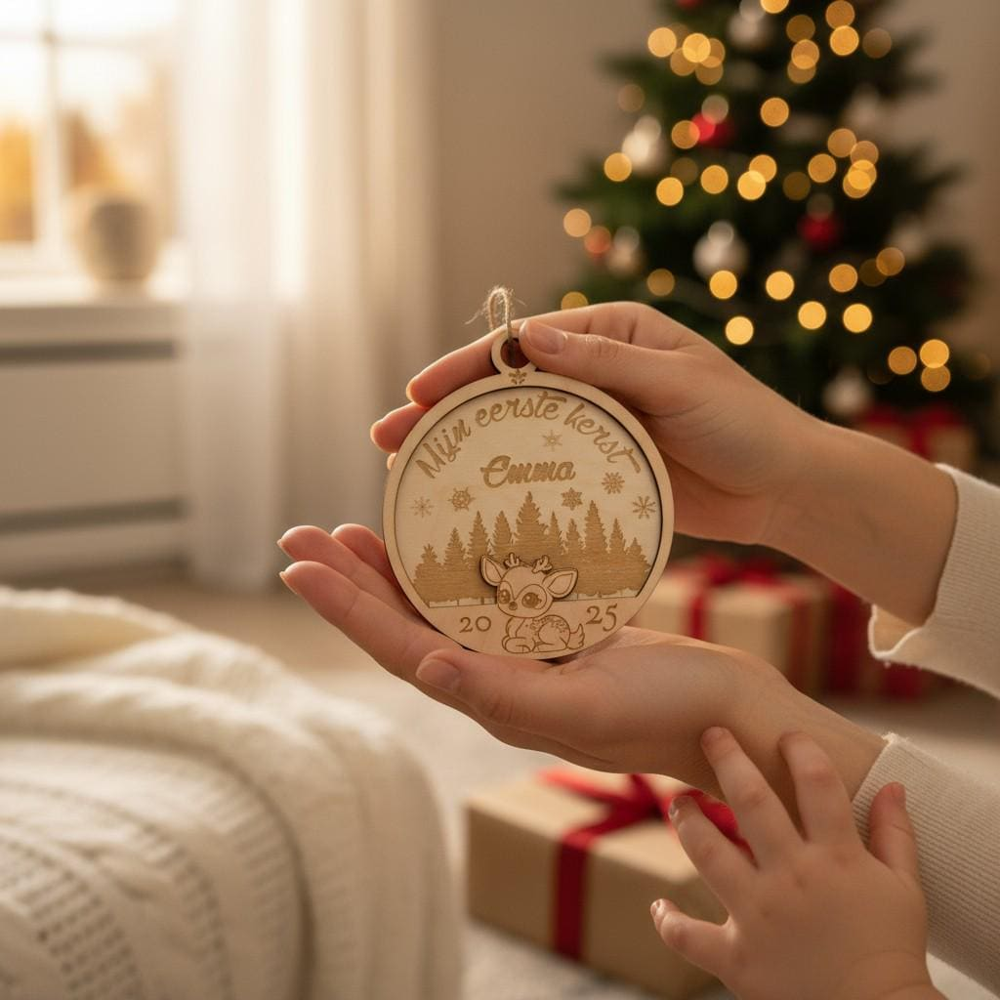

Porta-copos de madeira Árvore da Vida
Vê os presentes em madeira mais procurados antes de abrir a Etsy para avaliações, preços e encomendar.


São os cliques mais fáceis para quem quer uma escolha já comprovada.
Um conjunto entre os mais vendidos que leva um detalhe quente de madeira a mesas de centro, prateleiras e presentes de casa nova.
Ver na Etsy
Um marcador de livros de madeira com tema fantasia para leitores e amantes dos livros — um presente pessoal sem precisar saber muito sobre o destinatário.
Ver na Etsy
Um desenho celeste para mesas de fim de dia, interiores acolhedores e compradores que procuram uma peça com presença.
Ver na EtsyComeça pela pessoa ou pelo momento quando o tipo de produto ainda não está definido.

Porta-copos e pequenas peças em madeira com tema felino, acolhedoras, fáceis de oferecer e fáceis de colocar em casa.

Marcadores, peças de fantasia e presentes para cantos de leitura pensados para leitores que gostam de detalhes pessoais.

Peças em madeira úteis para mesas de centro, prateleiras e presentes de casa nova que continuam a parecer escolhidos com intenção.
Entra aqui se o tipo de produto já estiver claro.

Conjuntos de porta-copos mais vendidos com desenhos celestes, naturais, vikings e outros temas com personalidade para mesas, prateleiras e presentes de casa nova.
Porta-copos de madeira
Marcadores pensados para leitores, fãs de fantasia, diários de leitura e serões tranquilos.
Marcadores de livros de madeira
Pendentes de porta, porta-velas, recordações e peças decorativas para prateleiras, entradas e presentes com um toque pessoal.
Presentes de madeiraAlguns excertos de avaliações que tornam o clique para a Etsy mais fácil.
"Envio rápido, bem embalado e igual à imagem. Recomendo!"
"Trabalho fantástico! Ficou ainda melhor do que esperava! Adorei o toque especial de enviar o produto embrulhado de forma tão cuidada — mostrou muita atenção ao detalhe."
"Foi um prazer absoluto lidar com esta loja. Não poderia ter pedido um melhor serviço do início ao fim. Vou voltar para mais!"
"Ótima qualidade, exatamente como descrito, e uma comunicação simpática e clara."
"Estes porta-copos são exatamente como nas fotos e a lojista tem muita integridade — ajudaram-me a resolver um problema de envio e reenviaram o produto. Recomendo muito esta loja."
"Estes porta-copos são lindos. São de madeira e parecem muito resistentes."
As respostas curtas que a maioria quer ver antes de sair deste site.
Navega aqui para encontrar o artigo certo e depois vai à Etsy para ver o preço completo, avaliações, opções de personalização e fazer a encomenda — tudo num só lugar.
Sim. Muitos artigos podem ser personalizados. Envia uma mensagem à loja na Etsy antes de encomendar e o vendedor confirma o que é possível para a peça escolhida.
Começa pelas categorias em destaque se a ocasião estiver clara, ou pelo bloco dos mais vendidos para uma escolha já comprovada.
A loja tem uma classificação de 4,96/5 na Etsy, ao longo de centenas de avaliações — todas referindo qualidade, detalhe artesanal e bom serviço. Podes ler todas antes de comprar.